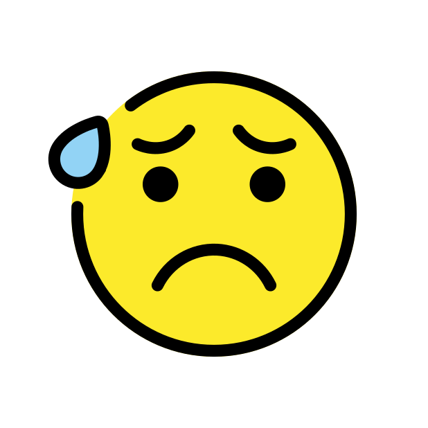

<!DOCTYPE html>
<html>

<head>
    <title>gradient-feedback-multi-mm</title>
    <meta http-equiv="Content-Type" content="text/html; charset=utf-8">
    <script src="jsPsych/jspsych.js" charset="utf-8"></script>
    <script src="plugins/jspsych-gradient-feedback-multi-mm.js" charset="utf-8"></script>
    <script src="js/utils.js" charset="utf-8"></script>
    <link href="jsPsych/css/jspsych.css" rel="stylesheet" type="text/css"></link>
    <link href="css/plugins-mm.css" rel="stylesheet" type="text/css"></link>
</head>

<body>
    <script>
        /* create timeline */
        var timeline = [];


        var fbtest = {
            type: "gradient-feedback-multi-mm",
            values: [77, 56, 65],
            end_colors: ["green", "blue", "red"],
            left_labels: ["","","</img>"],
            right_labels: ["","","</img>"],
            titles: ["Randomness", "Metronome", "<font size='+3'>Total</font>"],
            opacities: [0.4, 0.4, 1]
        }

        timeline.push(fbtest);

        /* start the experiment */

        jsPsych.init({
            exclusions: {
                audio: true
            },
            timeline: timeline,
            on_finish: function () {
                //jsPsych.data.displayData("csv");
                var resultCsv = jsPsych.data.get().csv();
                var iadata = jsPsych.data.getInteractionData().csv();
            },
            on_interaction_data_update: function (data) {
                console.log(JSON.stringify(data))
                if(data.event=="blur"){
                    jsPsych.pauseExperiment();
                } else if(data.event=="focus"){
                    jsPsych.resumeExperiment();
                }
            }
        });

    </script>
</body>

</html>
